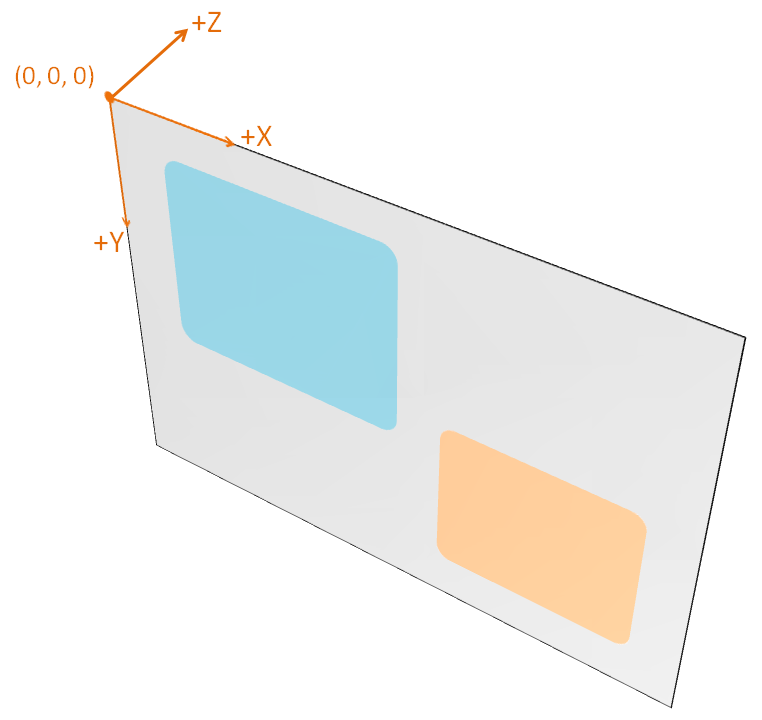
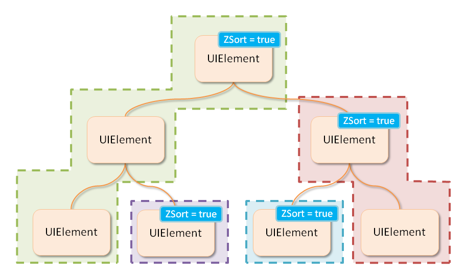
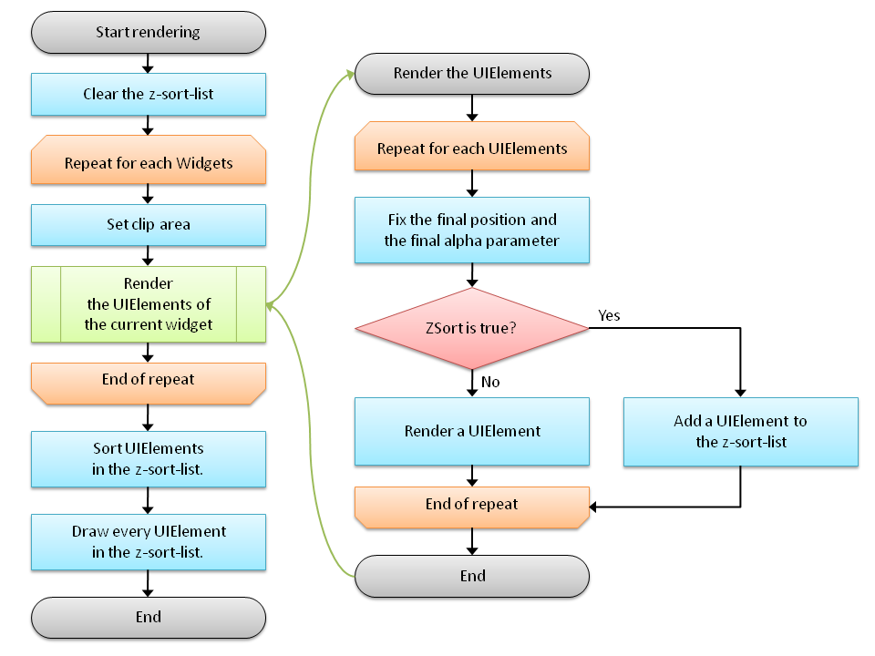

UI Toolkit の描画の仕組みについて解説します。
Contents
UI Toolkit では、従来通りの平面的なウィジェットの中に、部分的に立体的な表現を混在させることができます。
Widget や UIElement を 3D 座標系で配置する場合は、Transform3D プロパティや Z プロパティを使用して位置を設定します。
3D 座標系で Widget と UIElement の位置設定を行うコード例を以下に示します。
// set position Z // Widget Matrix4 mat = widget.Transform3D; mat.M43 = -100.0f; widget.Transform3D = mat; // another way widget.Transform3D = Matrix4.Translation(new Vector3(widget.X, widget.Y, -100.0f)); // UIElement (UISprite and UIPrimitive) Matrix4 mat2 = uiElement.Transform3D; mat2.M43 = -100.0f; uiElement.Transform3D = mat2; // UISpriteUnit UISpriteUnit unit = uiSprt.GetUnit(0); unit.Z = -100.0f; // UIPrimitiveVertex UIPrimitiveVertex vertex = uiPrimitive.GetVertex(0); vertex.Z = -100.0f;
3D 描画で使用される座標系は、以下のような右手座標系になっています(図1)。
画面右方向が X 軸の正の方向
画面下方向が Y 軸の正の方向
画面奥方向が Z 軸の正の方向
図1 UI Toolkit の使用する 3D 座標系
Widget や UIElement の 3D 表現を行う際は、以下の点に注意してください。
Widget のクリッピング領域は X、Y 座標と幅と高さのみ使って決定されるため、3D 座標系で配置された Widget や UIElement は正しくクリッピングされません。
Widgetを3D座標系で配置する際は、Clip プロパティに false を設定してクリッピングをオフにしてください。
Widget のヒット判定もクリッピング領域同様に、X、Y座標と幅、高さのみで決定されます。
Widget を 3D 座標系で配置する際は、TouchResponse プロパティに false を設定してヒット判定を切るか、HitTest メソッドをオーバーライドして正しいヒット判定処理を記述してください。
3D 配置されている描画要素の前後関係が時間と共に変化する場合は、正しい描画を行うために、画面上での Z 座標が大きい要素（奥にあるもの）から順に描画する必要があります。
Widget や UIElement の ZSort プロパティを true にすると、true にした対象が 3D 描画される際に、自動的に画面の奥方向から手前の順にソートされて、描画が行われます。
また、ZSort 指定された Widget や UIElement に対して、ZSort 指定されていない子要素はひとまとまりとしてソートされます。
図2 に UIElement に ZSort が指定された際のグループの例を示します。
図2 ソート時の UIElement のグループ分けの例
UI Toolkit では、図3 のような手順で描画処理を行います。
図3 UIToolkit の描画処理の流れ
UI Toolkit では、初期化処理時（UISystem.Initialize）と描画処理時（UISystem.Render）に、以下の Sce.PlayStation.Core.Graphics.GraphicsContext のステートを変更しますので、UI Toolkit 以外でも描画処理を行う場合には注意してください。
UISystem.Initialize 呼び出し時に変更されるステート
- EnableMode.Blend（trueに設定されます）
- EnableMode.ScissorTest（trueに設定されます）
- FrameBuffer（nullに設定されます）
- BrendFunc（BlendFuncMode.Add, BlendFuncFactor.SrcAlpha, BlendFuncFactor.OneMinusSrcAlphaに設定されます）
UISystem.Render 呼び出し時に変更されるステート
- Scissor
- ShaderProgram
- Texture
- VertexBuffer
- Viewport（全画面に設定されます）
- FrameBuffer（nullに設定されます）
なお、これ以外のステートに関しても描画処理時に変更する場合がありますが、描画処理終了後に適切に復元されます。